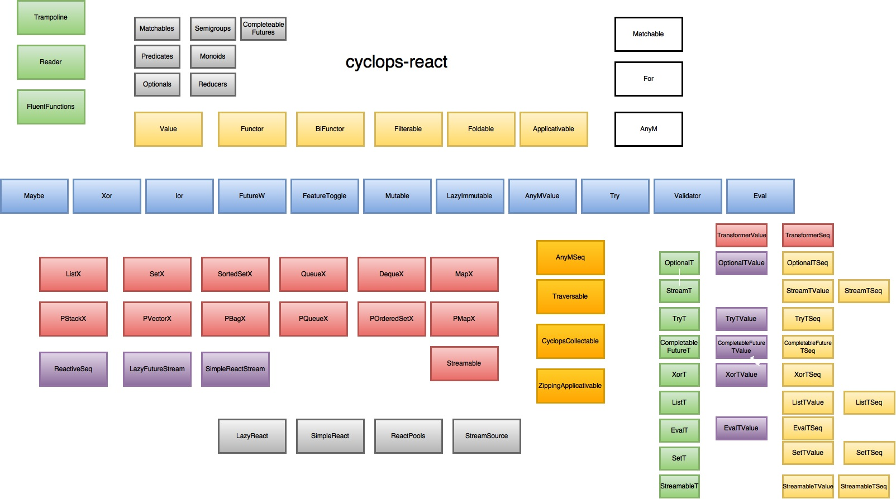

Quickstart
and Documentation
compile 'com.aol.simplereact:cyclops-react:x.y.z'

Future & functional based programming via JDK compatible extensions for Java 8 and above.
Cyclops-react adds a series of extensions to standard (mutable) Java collections as well as support for pCollections, a set of persistent collections that also implement the JDK interfaces.

Cyclops-react is used in Aol to build robust, performant & scalable asynchronous systems
Features include:
- Compatible extensions to JDK interfaces (Collections, Streams, Functions)
- Built with jOOλ, reactive-streams, Agrona and pCollections
- Extensions for efficient JDK compatible persistent collections (pCollections)
- Single-threaded asynchronous streaming
- Scheduling of data emission
- Powerful extended type hierarchy for aggregrations (Collections & Streams) and single values
- FutureStreams for managing aggregates for Future Tasks (e.g. for multi-threaded execution of large numbers of I/O tasks)
- Powerful functional-style control structures, implemented in Java friendly manner (Maybe, Eval, FutureW, Xor, Ior, Try, AnyM, structural & guard based pattern matching, for-comprehensions)
- Execute functions between wrapped values (Optional / CompletableFutre etc) without tedious unwrapping (Java friendly Applicative support).
- Java friendly abstractions for wrapping any Monad type (Stream, CompletableFuture, Optional, cyclops-react types and types from other Java projects too). AnyM and it's two subtypes AnyMSeq for aggregates (Steam, List etc) and AnyMValue for Values
- Monad Transformers - for manipulating nesting monadic types (e.g. Optionals within a Stream as if it were just an Optional)
- Applicatives - apply functions across wrapped types (e.g. Optional / Maybe / Xor) without unwrapping & aggregate without terminate on failure
- Structural pattern matching & pattern matching via Guards (see Matchable and Matchables)
- Full strength for comprehensions / generators (reference elements from other generators)
- Tight integration with reactive-streams : collections, streams and datatypes are publishers & can be generated via subscribers
- Very Extensible & integration with other projects via cyclops-integration modules.